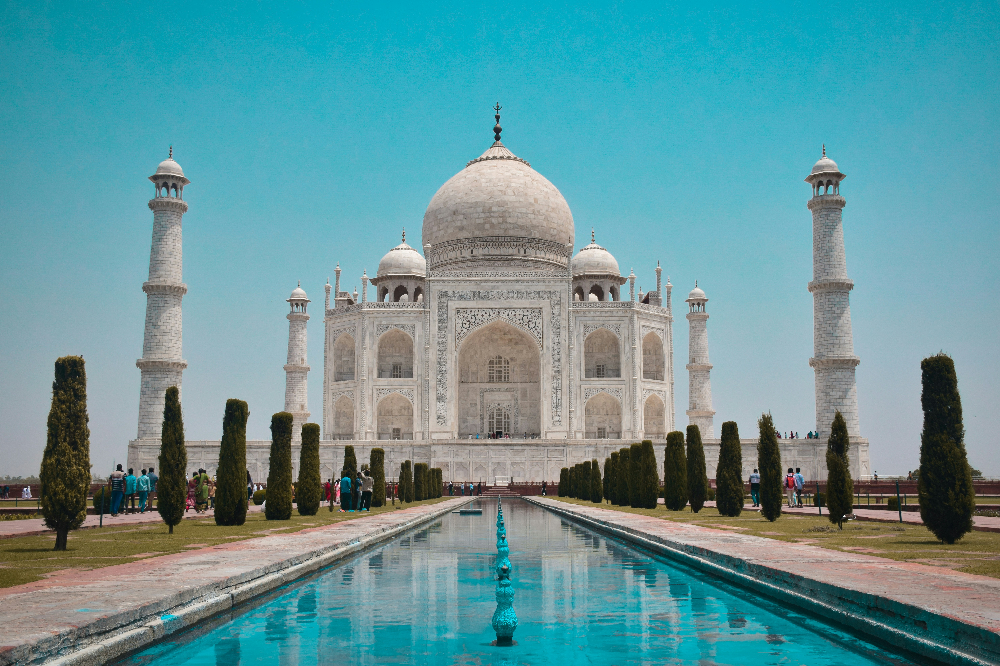
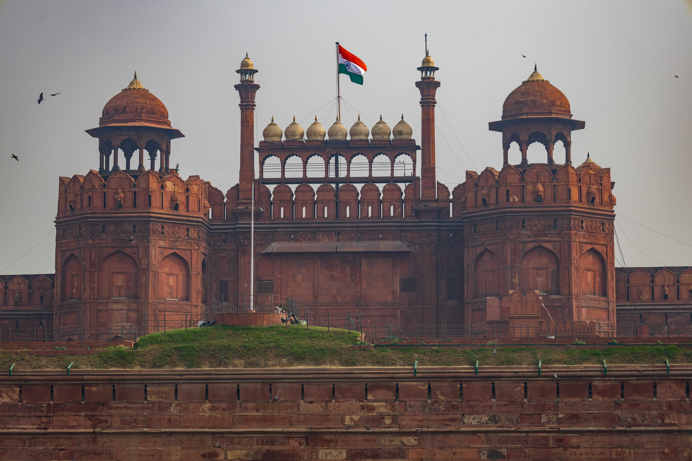
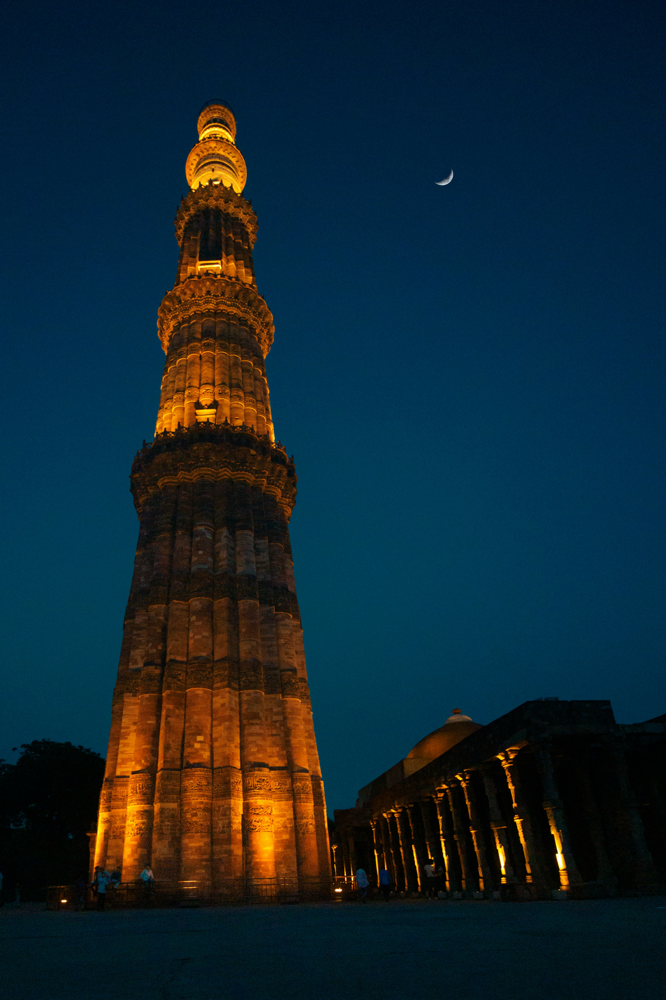

Taj Mahal
The Taj Mahal, located in Agra, India, is one of the most famous monuments in the world. Built by Mughal Emperor Shah Jahan in memory of his beloved wife Mumtaz Mahal, it symbolizes eternal love. Constructed between 1631 and 1653, the white marble mausoleum features exquisite carvings, intricate inlay work, and perfect symmetry. The Taj Mahal is surrounded by beautiful gardens and reflected in a long pool, enhancing its breathtaking beauty. Recognized as a UNESCO World Heritage Site, it attracts millions of visitors every year and stands as a masterpiece of Mughal architecture and a timeless wonder of the world.

Red Fort
The Red Fort, located in Delhi, India, is a magnificent symbol of India's rich history and architectural brilliance. Built by Mughal Emperor Shah Jahan in 1639, it served as the main residence of the Mughal emperors for nearly 200 years. Constructed from red sandstone, the fort features massive walls, grand gates, and beautiful palaces that showcase Mughal artistry. Important structures inside include the Diwan-i-Aam, Diwan-i-Khas, and the Rang Mahal. The Red Fort holds great national significance, as India's Prime Minister hoists the national flag here every Independence Day. It is a UNESCO World Heritage Site and a major tourist attraction.

Qutub Minar
The Qutub Minar, located in Delhi, India, is one of the tallest brick minarets in the world and a remarkable example of Indo-Islamic architecture. It was commissioned by Qutb-ud-din Aibak in 1192 and later completed by his successors. Standing about 73 meters high, the tower is built of red sandstone and marble, adorned with intricate carvings and verses from the Quran. Surrounding the minar are other historic structures, including the Quwwat-ul-Islam Mosque and the Iron Pillar. The Qutub Minar complex is a UNESCO World Heritage Site and attracts thousands of visitors, reflecting India's glorious medieval history and architectural excellence.

India Gate
India Gate, located in New Delhi, is one of India's most iconic war memorials. Designed by Sir Edwin Lutyens, it was built in 1931 to honor the 70,000 Indian soldiers who lost their lives fighting for the British Army during World War I. Made of red and yellow sandstone, the 42 meter high arch resembles the Arc de Triomphe in Paris . Beneath it burns the Amar Jawan Jyoti, an eternal flame dedicated to soldiers who died in later wars. Surrounded by glorious lawns, India Gate is a general tourist spot and a symbol of national pride , sacrifice, and India's existent legacy .